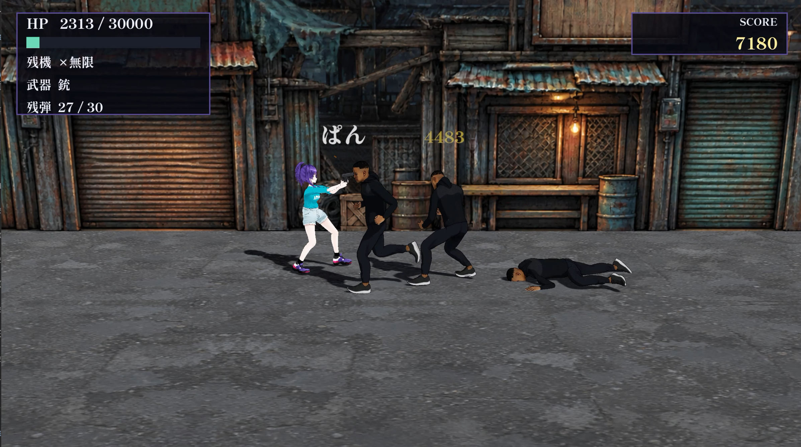
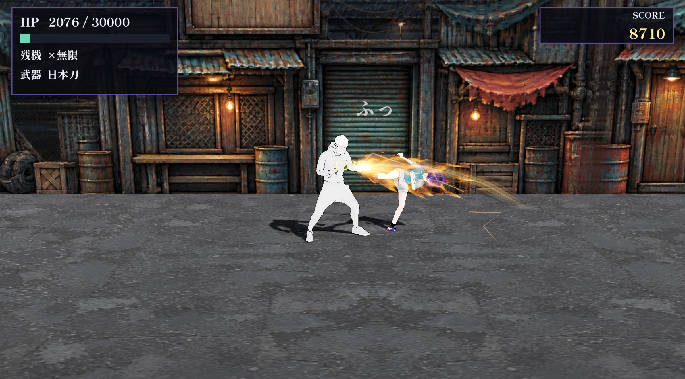
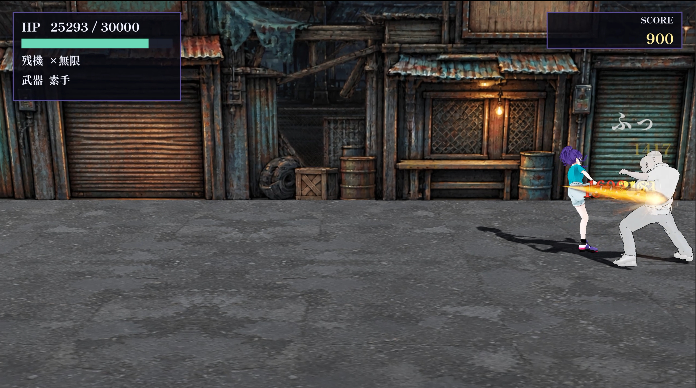

ダウンロード（v2.0.0-beta）
WindowsSeventeen-v2.0.0-beta-windows.zip（824 MB）
↓ ダウンロード
macOSSeventeen-v2.0.0-beta-macos.zip（845 MB）
↓ ダウンロード
LinuxSeventeen-v2.0.0-beta-linux.zip（815 MB）
↓ ダウンロード
起動のしかた
- Windows: zip を展開し、
Seventeen.exeを開く。Seventeen.pckを同じフォルダに置いたままにする。 - macOS: zip を展開し、
Seventeen.appを開く。署名していないので、初回は開けないと表示される。システム設定 → プライバシーとセキュリティで「このまま開く」を押す。 - Linux: zip を展開し、
Seventeen.x86_64を実行する。Seventeen.pckを同じフォルダに置いたままにする。
動作環境
- Windows・Linux は 64bit（x86_64）。Vulkan に対応した GPU が要る。
- macOS は Intel と Apple シリコンの両方で動く（universal）。
- キーボードかゲームパッドで遊ぶ。操作は上のタブの各キャラのページにある。
内容についての注意
武器（日本刀・銃）を使った戦闘と、流血の表現がある。
ファイルの確認
SHA-256 は SHA256SUMS.txt にある。
6e99aa8bca85a7e10bc2b7b3d6e80f50f059c35882c62507f56ad22b2e4d374b windows47f503e0fde359beb5832a7d9ce32a2006ca05610d813f2c81100054c80af3ce macos4703ce074de7f98d08fb4e5da97bc67a3c455bf6035806d089fbb44bdb8500df linux
過去の版は Releases にある。
画面


